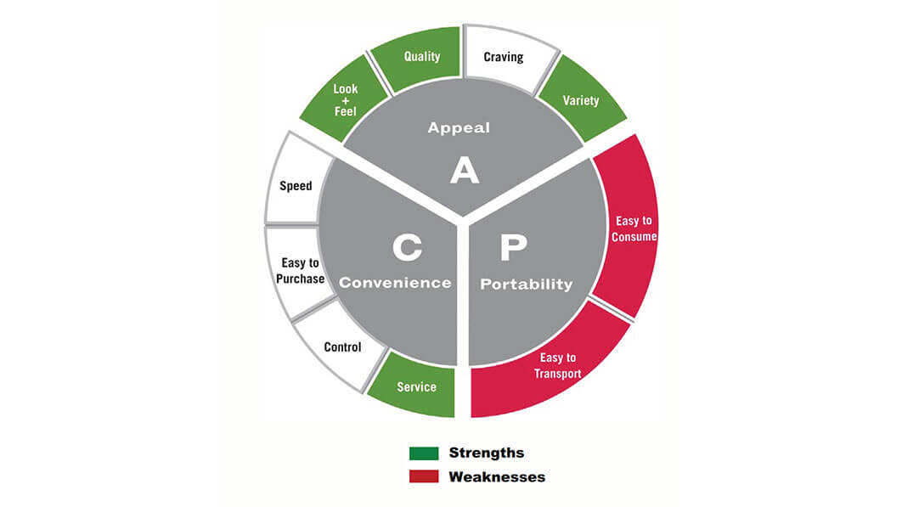

Let’s say you wanted to make your own outfit, to make one it doesn’t just take thread, fabric, and a sewing machine. In order to make a clothing piece it is more than the materials, you also need to have a sewing pattern. Whether it is something as simple as a sock or as complex as a prom dress if you do not have a sewing pattern it will most likely not come out the way you want it to.Making a code with a design pattern is similar in the sense that you will have an outcome but it may not be the outcome you want despite putting a lot effort in it. If you had already made a clothing piece without a sewing pattern and you did not get the outcome you wanted you would have to start all over again. With codes you get to go back and fix it however in a lot of cases going back and fixing a code that is poorly design would consume more time then starting all over again, thus it is important to have a design pattern before you start writing a code. The more complex the clothing piece is, the more sewing patterns you have to make in order to capture the intricate details that you have in mind. With codes you have to consider a lot of things and plan out how to handle them,for example you can plan out what can happen that can go wrong and a solution for it,you can also have the objective, structures, and a rough draft like where you plan on putting certain functions or loops.
A requirement for the very first code I wrote was that it had to have comments as an algorithm, for my first couple of coding assignments I did the comments after writing the code as I felt like planning out the code beforehand was unnecessary. I had gotten away with it for some time until I started to struggle and had to start my code over from the very beginning. After starting to make design plans I noticed that I had to spend less time going back and fixing mistakes. The first time I fully used a design pattern was the first time I had to code with a group of people. Design patterns are especially important for group projects as it clearly implements a motive, and goal for the group. It also allows the group to be more organized as it allows the group to break the work equally. We first started with an objective/goal, having this set allows us to not go off a different path when we start planning out the structure of the code. After solidifying an objective we started building the structure. Once we fixed any weaknesses that we might see come up in the structure we started to break it down more into a rough draft as to where we wanted loops and certain functions to be. This code was a game of black jack. The goal was quite straight forward so we focused more time on the structure and rough draft. Having a design pattern made it easy to guide through the project as we did not run into a lot of trouble.